D/GR/SH/23
الدور 0 — 35 م² — DRAFT
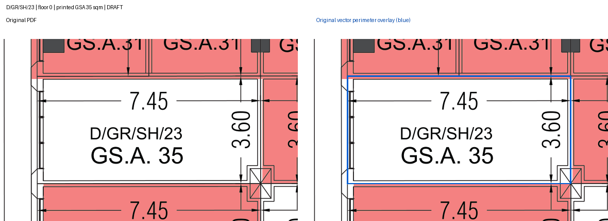
361 مسارًا بحالة DRAFT. 140 من 153 سجلًا لها مسارات، و13 سجلًا غير محسوم. لا اعتماد نهائي للخرائط.
الأصل يسار كل مقارنة، والمحيط المتجه الأزرق يمينها. انقر الصورة لعرضها كاملة.
التقرير · JSON المحدث · السجلات غير المحسومة
الدور 0 — 35 م² — DRAFT

الدور 0 — 35 م² — DRAFT
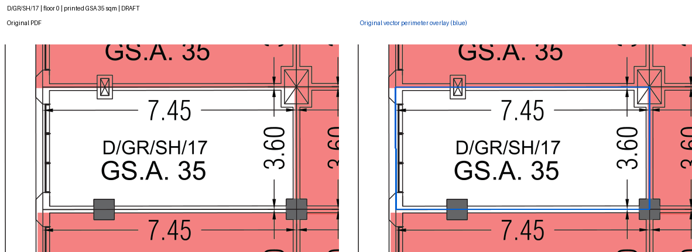
الدور 0 — 51 م² — DRAFT
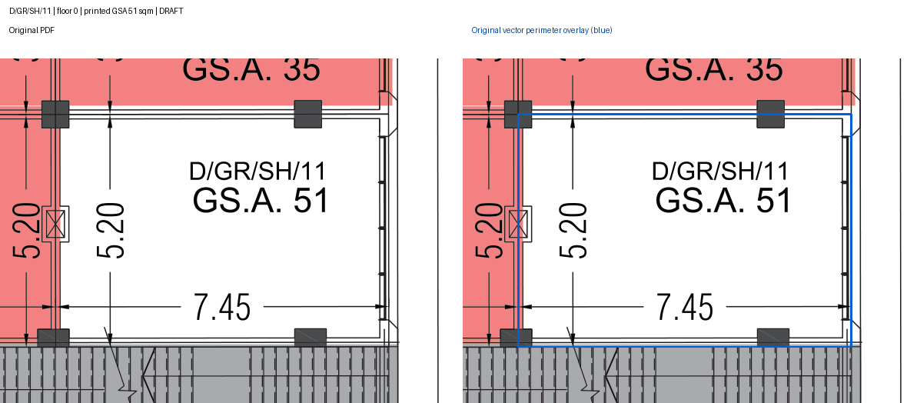
الدور 0 — 35 م² — DRAFT
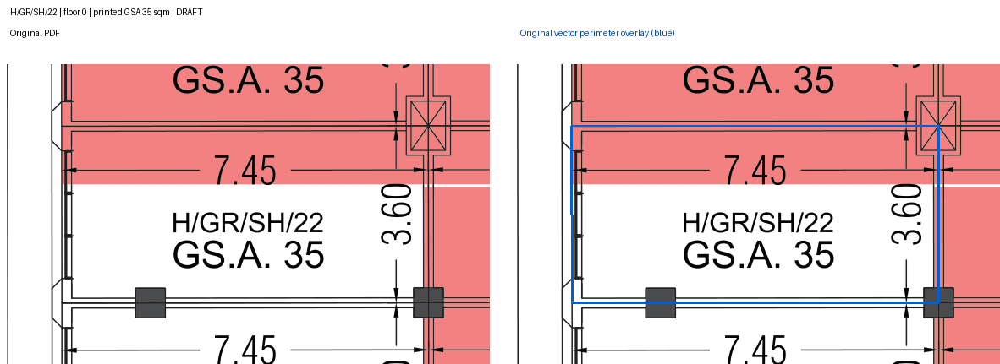
الدور 0 — 35 م² — DRAFT
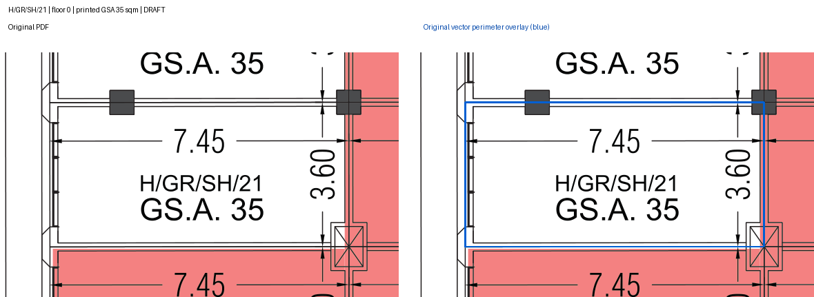
الدور 0 — 39 م² — DRAFT
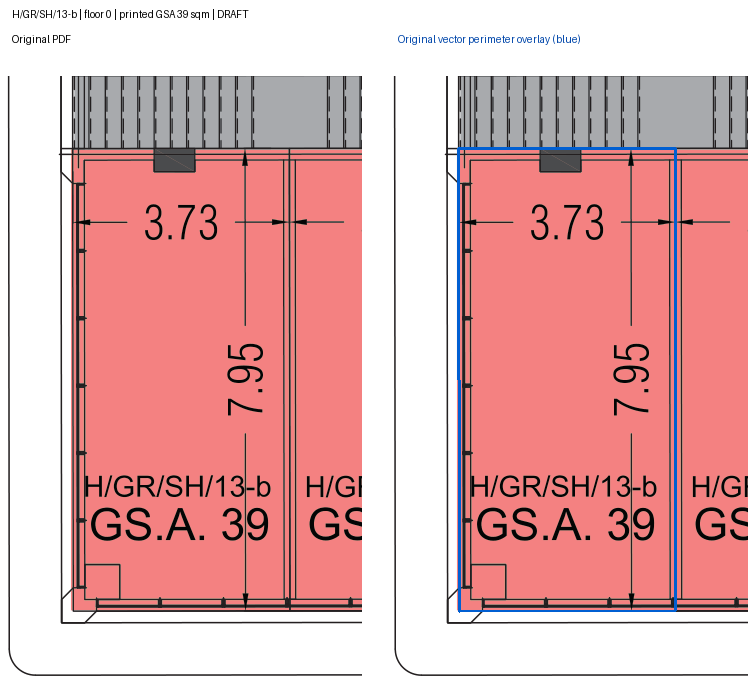
الدور 1 — 133 م² — DRAFT
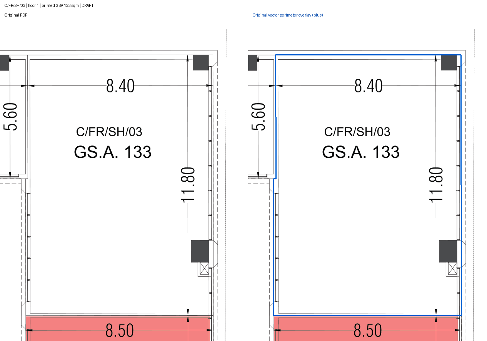
الدور 1 — 48 م² — DRAFT
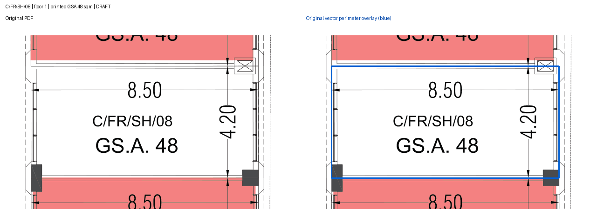
الدور 1 — 121 م² — DRAFT
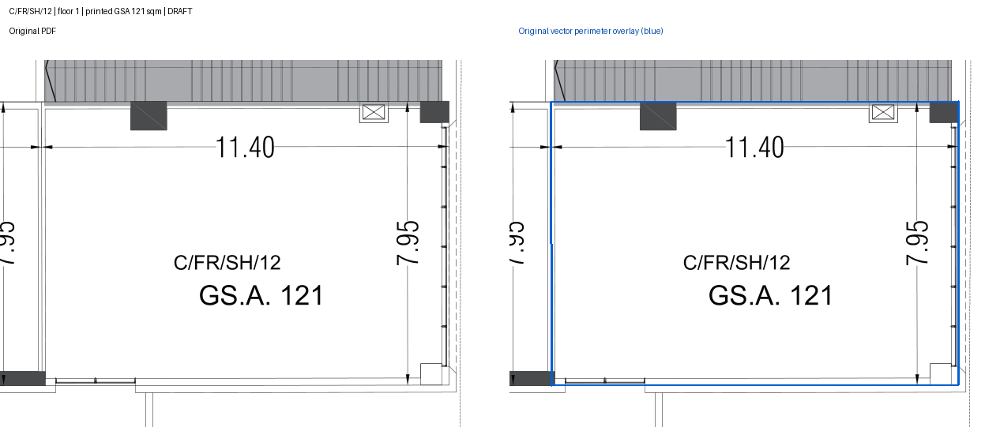
الدور 1 — 75 م² — DRAFT
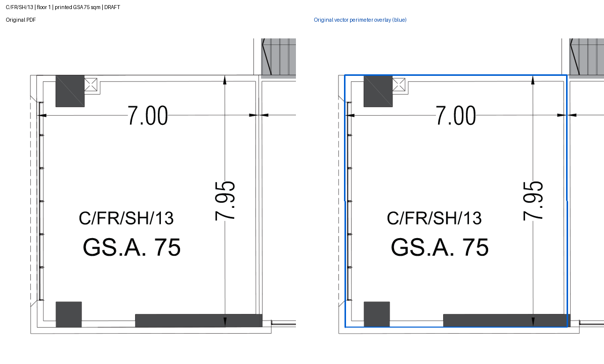
الدور 1 — 75 م² — DRAFT
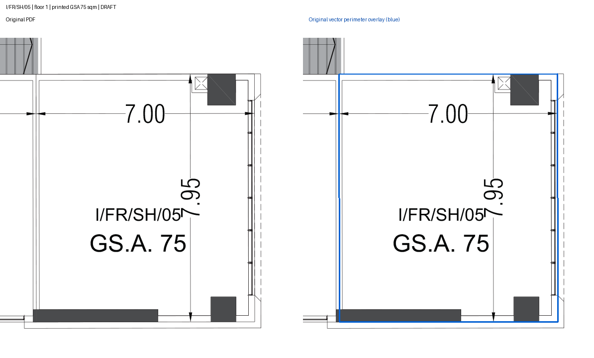
الدور 1 — 121 م² — DRAFT
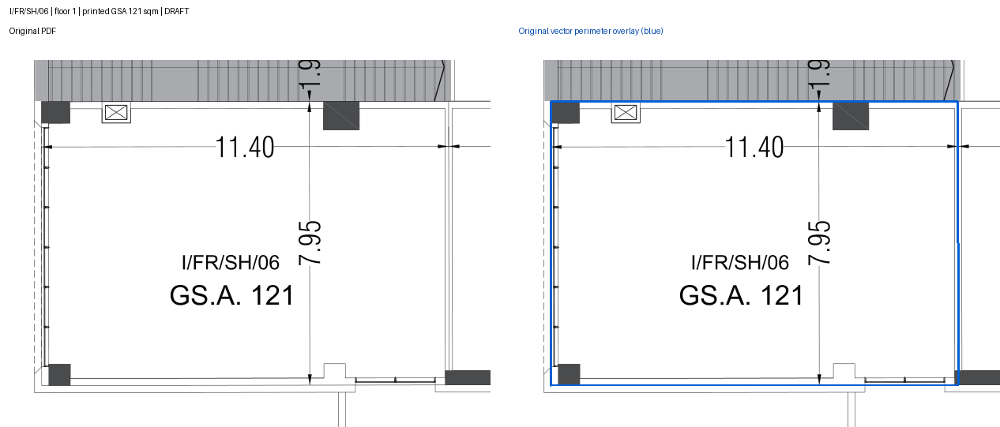
الدور 1 — 42 م² — DRAFT
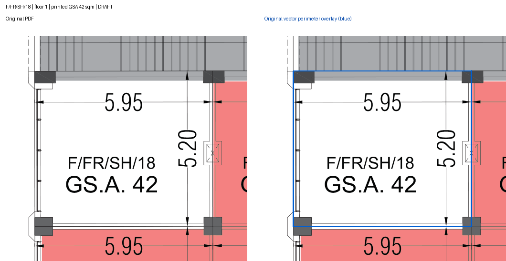
الدور 1 — 26 م² — DRAFT
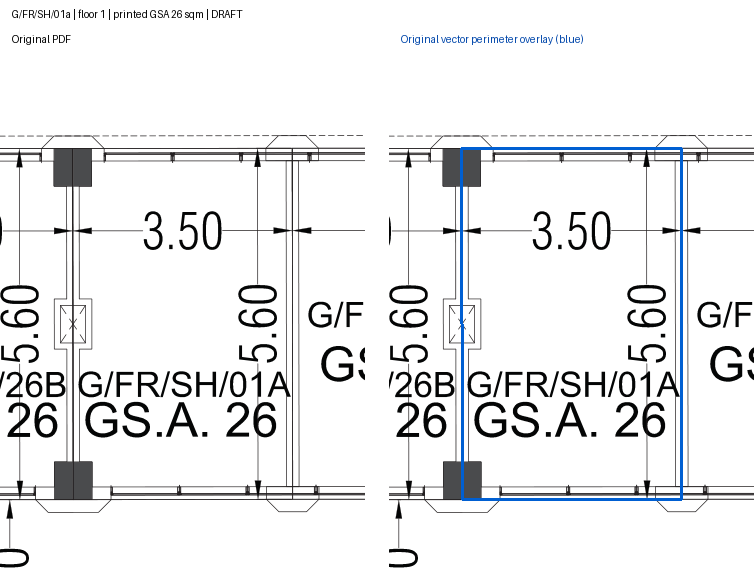
| الكود | الدور | المساحة | السبب |
|---|---|---|---|
| A/BA/SH/01 | -1 | 64.0 | الرسم يحمل A/BA/SR/01؛ نوع SR مختلف عن SH. لا يجوز ربطهما حتى عند تساوي المساحة. |
| A/BA/SH/03 | -1 | 158.0 | الرسم يحمل A/BA/SR/03؛ نوع SR مختلف عن SH. لا يجوز ربطهما حتى عند تساوي المساحة. |
| A/BA/SH/04 | -1 | 171.0 | الرسم يحمل A/BA/SR/04؛ نوع SR مختلف عن SH. لا يجوز ربطهما حتى عند تساوي المساحة. |
| A/BA/SH/05 | -1 | 171.0 | الرسم يحمل A/BA/SR/05؛ نوع SR مختلف عن SH. لا يجوز ربطهما حتى عند تساوي المساحة. |
| A/BA/SH/06 | -1 | 171.0 | الرسم يحمل A/BA/SR/06؛ نوع SR مختلف عن SH. لا يجوز ربطهما حتى عند تساوي المساحة. |
| A/BA/SH/07 | -1 | 180.0 | الرسم يحمل A/BA/SR/07؛ نوع SR مختلف عن SH. لا يجوز ربطهما حتى عند تساوي المساحة. |
| A/BA/SH/08 | -1 | 140.0 | الرسم يحمل A/BA/SR/08؛ نوع SR مختلف عن SH. لا يجوز ربطهما حتى عند تساوي المساحة. |
| B/GR/SH/04-a | 0 | 49.0 | الرسم يظهر B/GR/SH/4a بمساحة 49، بينما المخزون 04-a. الصفر والشرطة ليسا اختلاف حالة أحرف، ولم تُنشأ علاقة بديلة. |
| F/GR/SH/24 | 0 | 55.0 | الكود والمساحة 55 مطابقان. المسار الأصلي غير المنتظم رقم 163571 على الصفحة 2 ينتهي قبل نقطة البداية بفجوة 0.676026 نقطة PDF. لم تُضف وصلة افتراضية. |
| I/GR/SH/17 | 0 | 112.0 | الرسم يظهر I/GR/SH/17A و17B بمساحة 56 لكل منهما، بينما المخزون وحدة 17 بمساحة 112. جمع المساحتين لا يثبت وحدة موحدة. |
| A/FR/SR/22b | 1 | 65.0 | الرسم يظهر A/FR/SR/22 واحدة بمساحة 131، ولا يبين حدود 22a و22b. مساحة المخزون 67 + 65 = 132 لا تثبت تقسيمًا. |
| A/FR/SR/22a | 1 | 67.0 | الرسم يظهر A/FR/SR/22 واحدة بمساحة 131، ولا يبين حدود 22a و22b. مساحة المخزون 67 + 65 = 132 لا تثبت تقسيمًا. |
| C/GR/sh/16B | 1 | 42.0 | المخزون يسجل C/GR/sh/16B على الدور 1 ومساحة 42؛ الرسم على الدور 1 يحمل C/FR/SH/16B بمساحة 32. لا يُعدل الدور أو الكود أو المساحة تلقائيًا. |